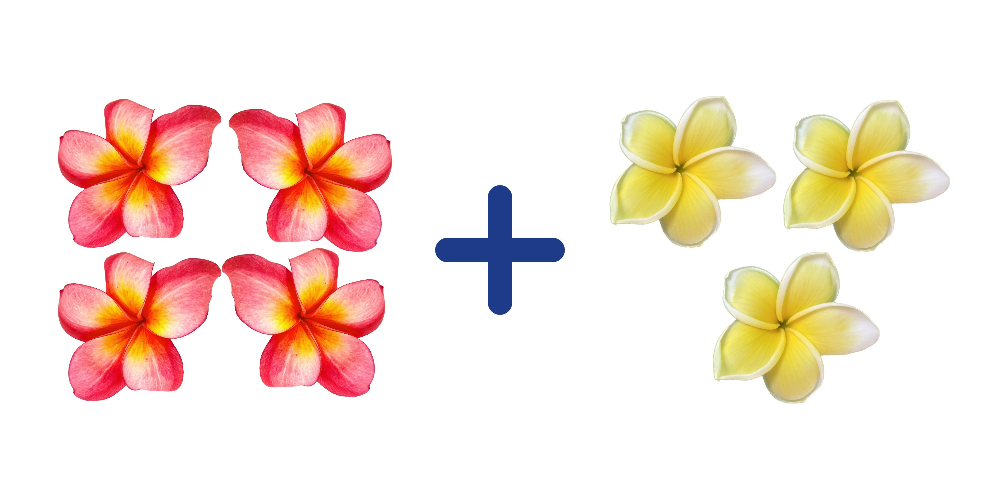
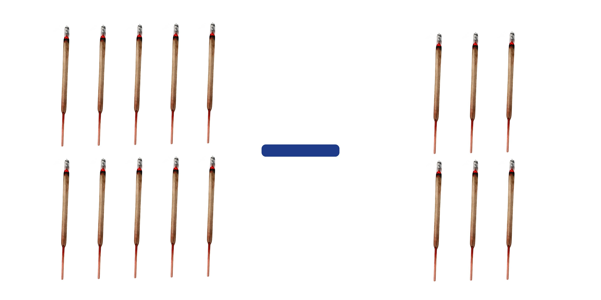
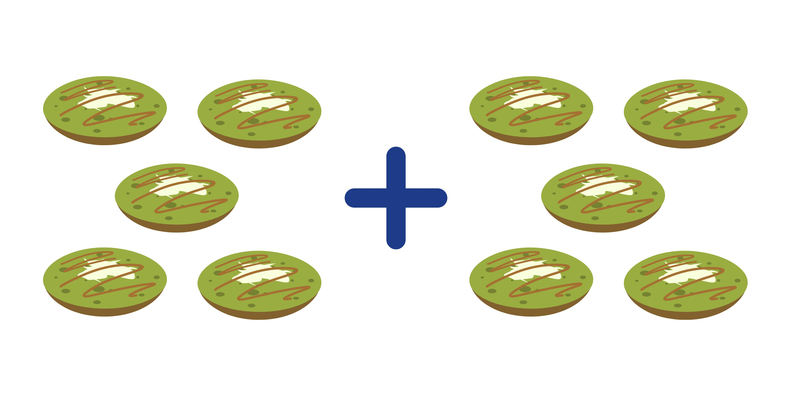
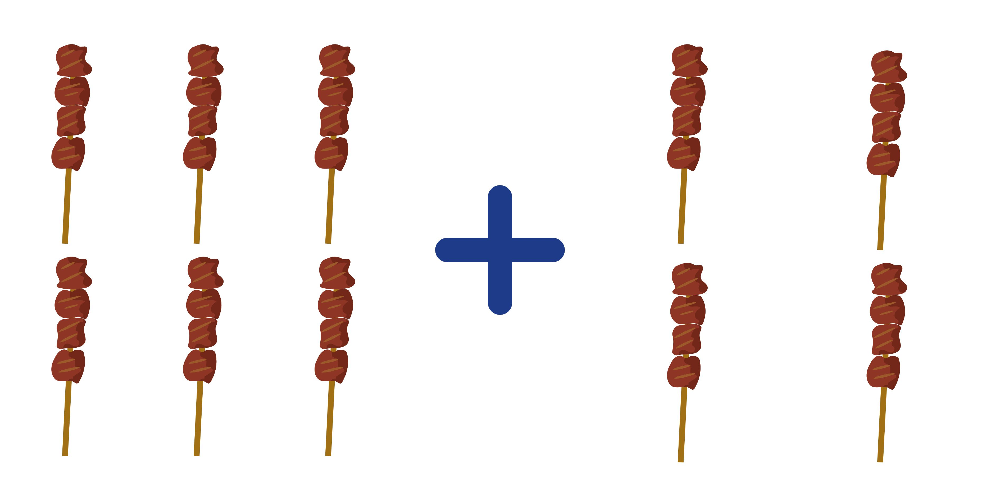
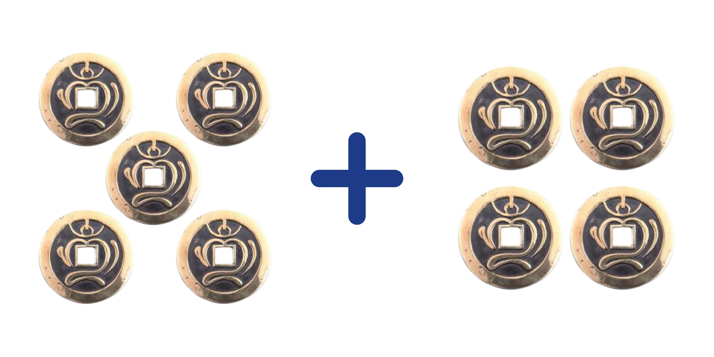
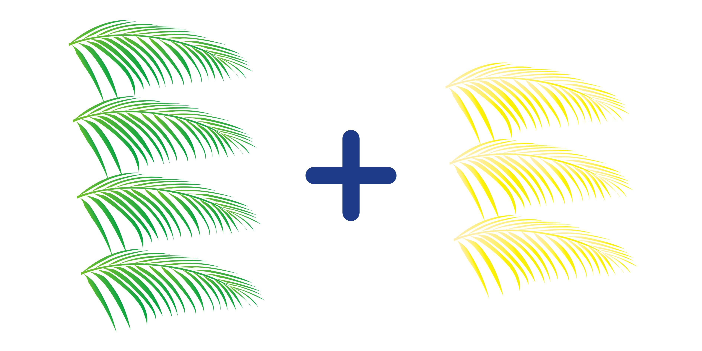
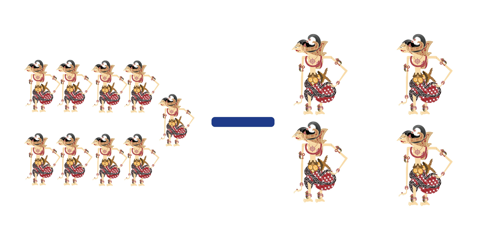
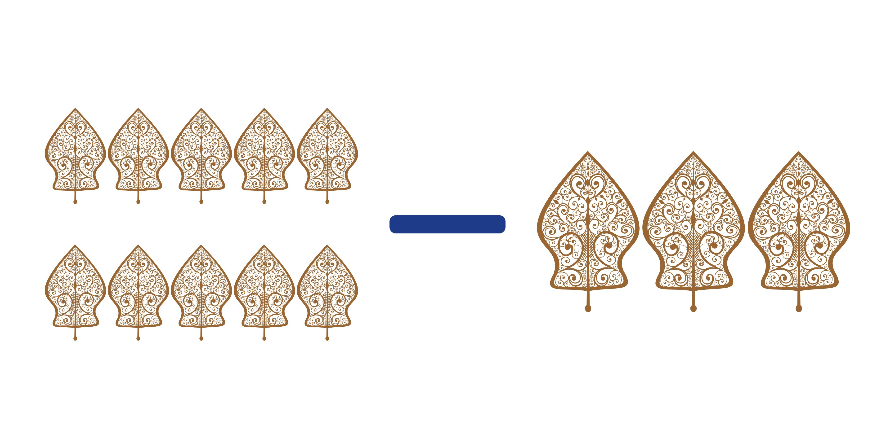
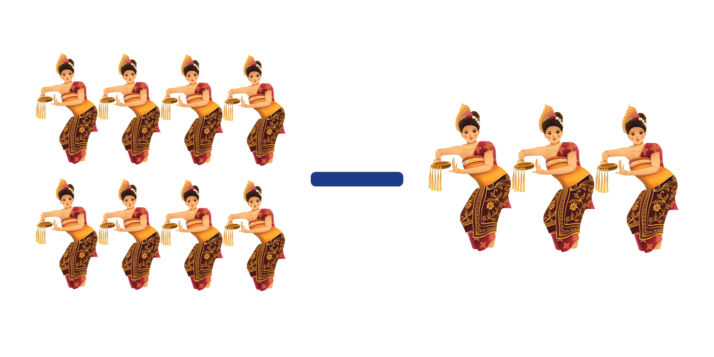
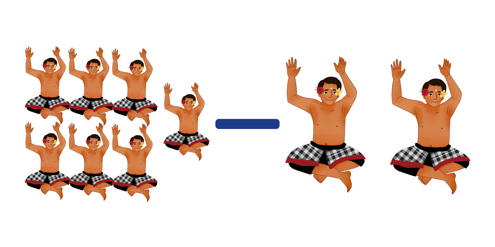

Etnomatika Bali
Buku Interaktif Berhitung Etnomatematika Bali
🙏 Om Swastiastu!
Halo Anak Hebat! Selamat datang di buku pembelajaran etnomatika ini. Kita akan belajar berhitung sambil melihat keindahan Bali.

Siapkan dirimu untuk pembelajaran yang seru ya!
🔎 Apa itu Etnomatematika?
Etnomatematika adalah kata keren untuk menyebut "Matematika di dalam Budaya".

Artinya, kita belajar menjumlah dan mengurangi lewat benda-benda yang ada di rumah, pura, atau tradisi kita di Bali.
🌴 Matematika di Sekitar Kita
Tahukah kamu? Kita menggunakan matematika saat:
- Menghitung tokoh Wayang Kulit.
- Menghitung penari di atas panggung.
- Membagi Sate Lilit dengan teman.
🌸 Menghitung Bunga Canang
Wayan menaruh 4 bunga merah dan 3 bunga kuning di Canang Sari.

Berapa jumlah semua bunga tersebut?
🕯️ Batang Dupa
Ibu menyiapkan 10 batang dupa. Setelah sembahyang, 6 batang sudah habis terbakar.

Berapa sisa dupa yang masih panjang?
🍡 Jaja Laklak Manis
Putu makan 5 biji Jaja Laklak. Made makan 5 biji Jaja Laklak juga.

Berapa jumlah laklak yang dimakan mereka berdua?
🍢 Sate Lilit Lezat
Bapak membakar 6 tusuk sate ayam dan 4 tusuk sate ikan.

Berapa semua sate yang dibakar Bapak?
🪙 Koleksi Pis Bolong
Nyoman punya 5 keping uang bolong. Kakak memberi 4 keping lagi.

Berapa banyak uang bolong Nyoman sekarang?
🎍 Janur Kuning
Untuk hiasan Penjor, ada 4 janur hijau dan 3 janur kuning.

Berapa jumlah seluruh janur tersebut?
🎭 Wayang Kulit Bali
Seorang dalang membawa 9 buah wayang. Saat pertunjukan dimulai, 5 wayang dipasang di layar.

Berapa sisa wayang yang masih ada di dalam kotak?
👹 Tokoh Wayang
Ada 10 tokoh pewayangan di atas meja. Bapak Dalang merapikan 3 tokoh ke dalam kotak.

Berapa tokoh wayang yang masih tersisa di atas meja?
💃 Penari Pendet
Ada 8 penari Pendet cantik yang sedang menari. Sebanyak 3 penari sudah selesai menari dan keluar panggung.

Berapa penari yang masih menari di atas panggung?
🔥 Tari Kecak
Di lingkaran Tari Kecak ada 7 penari utama. Sebanyak 2 penari sedang beristirahat di pinggir.

Berapa jumlah penari utama yang masih menari di tengah?
🎉 Selesai!
Kamu sudah berhasil menyelesaikan petualangan berhitung ini. Kamu hebat sekali!
Jangan lupa untuk selalu bersyukur dan rajin belajar ya!